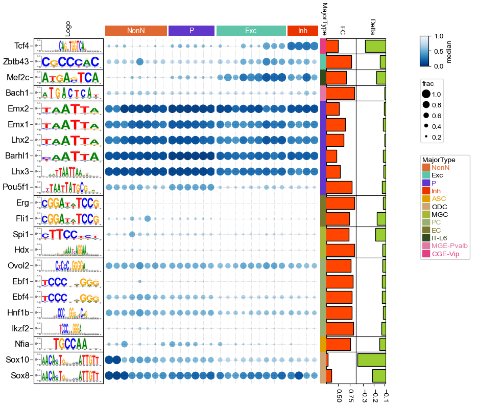
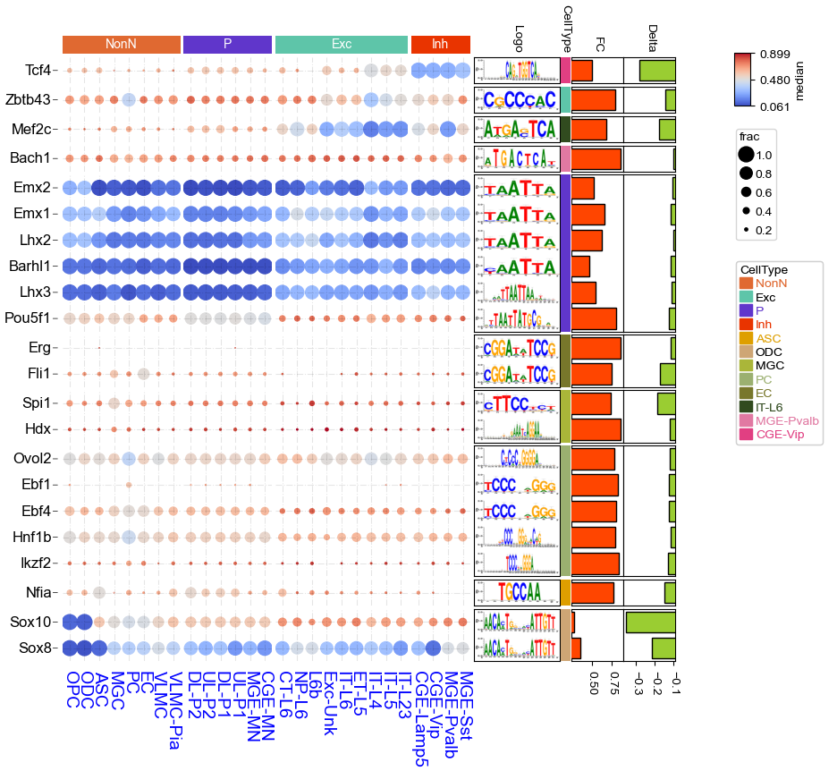

Visualizing gene set enrichment analysis results (clusterProfiler) using dotHeatmap¶
[2]:
import os,sys
import matplotlib.pylab as plt
import pickle
import glob
import numpy as np
import matplotlib as mpl
import pandas as pd
mpl.style.use('default')
mpl.rcParams['pdf.fonttype'] = 42
mpl.rcParams['ps.fonttype'] = 42
mpl.rcParams['font.family'] = 'sans-serif'
mpl.rcParams['font.sans-serif'] = 'Arial'
mpl.rcParams['figure.dpi'] = 80
mpl.rcParams['savefig.dpi']=300
import pickle
# sys.path.append(os.path.expanduser("~/Projects/Github/PyComplexHeatmap"))
import PyComplexHeatmap
# print(PyComplexHeatmap.__version__)
from PyComplexHeatmap import *
Read data¶
[2]:
with open("../data/anno_img_example.pickle",'rb') as f:
data,df_row,df_col,colors=pickle.load(f)
[3]:
data
[3]:
| MajorType | Gene | frac | median | |
|---|---|---|---|---|
| 0 | ASC | Bach1 | 0.141686 | 0.755535 |
| 1 | ASC | Barhl1 | 0.977752 | 0.114052 |
| 2 | ASC | Ebf1 | 0.000000 | 0.701078 |
| 3 | ASC | Ebf4 | 0.221311 | 0.616565 |
| 4 | ASC | Emx1 | 0.748244 | 0.370591 |
| ... | ... | ... | ... | ... |
| 589 | VLMC-Pia | Sox10 | 0.393939 | 0.584046 |
| 590 | VLMC-Pia | Sox8 | 0.661616 | 0.388624 |
| 591 | VLMC-Pia | Spi1 | 0.075758 | 0.728079 |
| 592 | VLMC-Pia | Tcf4 | 0.005051 | 0.733103 |
| 593 | VLMC-Pia | Zbtb43 | 0.272727 | 0.685164 |
594 rows × 4 columns
[4]:
df_row
[4]:
| groupA | auc_score | FC | DeltaMean | ID | Logo | |
|---|---|---|---|---|---|---|
| Gene | ||||||
| Nfia | ASC | 0.867084 | 0.767527 | -0.149461 | ASC|Nfia | https://motifcollections.aertslab.org/v10nr_cl... |
| Tcf4 | CGE-Vip | 0.941525 | 0.508175 | -0.282496 | CGE-Vip|Tcf4 | https://motifcollections.aertslab.org/v10nr_cl... |
| Erg | EC | 0.905526 | 0.857981 | -0.114057 | EC|Erg | https://motifcollections.aertslab.org/v10nr_cl... |
| Fli1 | EC | 0.865978 | 0.747177 | -0.171242 | EC|Fli1 | https://motifcollections.aertslab.org/v10nr_cl... |
| Zbtb43 | Exc | 0.685494 | 0.784200 | -0.144034 | Exc|Zbtb43 | https://motifcollections.aertslab.org/v10nr_cl... |
| Mef2c | IT-L6 | 0.801657 | 0.680693 | -0.177612 | IT-L6|Mef2c | https://motifcollections.aertslab.org/v10nr_cl... |
| Spi1 | MGC | 0.834667 | 0.736412 | -0.185941 | MGC|Spi1 | https://motifcollections.aertslab.org/v10nr_cl... |
| Hdx | MGC | 0.761553 | 0.852639 | -0.120034 | MGC|Hdx | https://motifcollections.aertslab.org/v10nr_cl... |
| Bach1 | MGE-Pvalb | 0.661613 | 0.855795 | -0.100834 | MGE-Pvalb|Bach1 | https://motifcollections.aertslab.org/v10nr_cl... |
| Sox10 | ODC | 0.898168 | 0.280051 | -0.354296 | ODC|Sox10 | https://motifcollections.aertslab.org/v10nr_cl... |
| Sox8 | ODC | 0.823024 | 0.361547 | -0.215307 | ODC|Sox8 | https://motifcollections.aertslab.org/v10nr_cl... |
| Emx1 | P | 0.698043 | 0.655946 | -0.114102 | P|Emx1 | https://motifcollections.aertslab.org/v10nr_cl... |
| Lhx2 | P | 0.698424 | 0.623909 | -0.101292 | P|Lhx2 | https://motifcollections.aertslab.org/v10nr_cl... |
| Lhx3 | P | 0.716947 | 0.550733 | -0.109488 | P|Lhx3 | https://motifcollections.aertslab.org/v10nr_cl... |
| Pou5f1 | P | 0.678675 | 0.800837 | -0.124454 | P|Pou5f1 | https://motifcollections.aertslab.org/v10nr_cl... |
| Barhl1 | P | 0.794566 | 0.469806 | -0.116628 | P|Barhl1 | https://motifcollections.aertslab.org/v10nr_cl... |
| Emx2 | P | 0.703207 | 0.522485 | -0.105113 | P|Emx2 | https://motifcollections.aertslab.org/v10nr_cl... |
| Hnf1b | PC | 0.725118 | 0.793915 | -0.115062 | PC|Hnf1b | https://motifcollections.aertslab.org/v10nr_cl... |
| Ebf4 | PC | 0.734220 | 0.797483 | -0.125697 | PC|Ebf4 | https://motifcollections.aertslab.org/v10nr_cl... |
| Ebf1 | PC | 0.926915 | 0.821295 | -0.125705 | PC|Ebf1 | https://motifcollections.aertslab.org/v10nr_cl... |
| Ovol2 | PC | 0.668495 | 0.775894 | -0.119117 | PC|Ovol2 | https://motifcollections.aertslab.org/v10nr_cl... |
| Ikzf2 | PC | 0.830705 | 0.830263 | -0.130275 | PC|Ikzf2 | https://motifcollections.aertslab.org/v10nr_cl... |
[5]:
df_col
[5]:
| CellClass | |
|---|---|
| MajorType | |
| ASC | NonN |
| MGC | NonN |
| UL-P2 | P |
| MGE-MN | P |
| DL-P2 | P |
| IT-L5 | Exc |
| MGE-Pvalb | Inh |
| UL-P1 | P |
| CT-L6 | Exc |
| IT-L6 | Exc |
| EC | NonN |
| OPC | NonN |
| ODC | NonN |
| MGE-Sst | Inh |
| DL-P1 | P |
| ET-L5 | Exc |
| NP-L6 | Exc |
| CGE-Lamp5 | Inh |
| IT-L23 | Exc |
| VLMC | NonN |
| IT-L4 | Exc |
| CGE-Vip | Inh |
| PC | NonN |
| CGE-MN | P |
| Exc-Unk | Exc |
| VLMC-Pia | NonN |
| L6b | Exc |
Plot¶
[6]:
# # download image to local
# import requests
# img_dir='images'
# if not os.path.exists(img_dir):
# os.mkdir(img_dir)
# for url in df_row.Logo.tolist():
# img_data = requests.get(url).content
# file=os.path.basename(url)
# with open(os.path.join(img_dir,file), 'wb') as handler:
# handler.write(img_data)
[7]:
img_dir='images'
df_row.Logo=df_row.Logo.apply(lambda x:os.path.join(img_dir,os.path.basename(x)))
df_row
[7]:
| groupA | auc_score | FC | DeltaMean | ID | Logo | |
|---|---|---|---|---|---|---|
| Gene | ||||||
| Nfia | ASC | 0.867084 | 0.767527 | -0.149461 | ASC|Nfia | images/jaspar__MA0670.1.png |
| Tcf4 | CGE-Vip | 0.941525 | 0.508175 | -0.282496 | CGE-Vip|Tcf4 | images/tfdimers__MD00119.png |
| Erg | EC | 0.905526 | 0.857981 | -0.114057 | EC|Erg | images/metacluster_135.7.png |
| Fli1 | EC | 0.865978 | 0.747177 | -0.171242 | EC|Fli1 | images/metacluster_135.7.png |
| Zbtb43 | Exc | 0.685494 | 0.784200 | -0.144034 | Exc|Zbtb43 | images/metacluster_131.8.png |
| Mef2c | IT-L6 | 0.801657 | 0.680693 | -0.177612 | IT-L6|Mef2c | images/transfac_pro__M04846.png |
| Spi1 | MGC | 0.834667 | 0.736412 | -0.185941 | MGC|Spi1 | images/metacluster_167.5.png |
| Hdx | MGC | 0.761553 | 0.852639 | -0.120034 | MGC|Hdx | images/tfdimers__MD00488.png |
| Bach1 | MGE-Pvalb | 0.661613 | 0.855795 | -0.100834 | MGE-Pvalb|Bach1 | images/jaspar__MA1633.2.png |
| Sox10 | ODC | 0.898168 | 0.280051 | -0.354296 | ODC|Sox10 | images/metacluster_4.1.png |
| Sox8 | ODC | 0.823024 | 0.361547 | -0.215307 | ODC|Sox8 | images/metacluster_4.1.png |
| Emx1 | P | 0.698043 | 0.655946 | -0.114102 | P|Emx1 | images/metacluster_164.1.png |
| Lhx2 | P | 0.698424 | 0.623909 | -0.101292 | P|Lhx2 | images/metacluster_164.1.png |
| Lhx3 | P | 0.716947 | 0.550733 | -0.109488 | P|Lhx3 | images/metacluster_9.26.png |
| Pou5f1 | P | 0.678675 | 0.800837 | -0.124454 | P|Pou5f1 | images/taipale_cyt_meth__POU5F1_NYTAATTATGCGNR... |
| Barhl1 | P | 0.794566 | 0.469806 | -0.116628 | P|Barhl1 | images/metacluster_124.2.png |
| Emx2 | P | 0.703207 | 0.522485 | -0.105113 | P|Emx2 | images/metacluster_164.1.png |
| Hnf1b | PC | 0.725118 | 0.793915 | -0.115062 | PC|Hnf1b | images/tfdimers__MD00345.png |
| Ebf4 | PC | 0.734220 | 0.797483 | -0.125697 | PC|Ebf4 | images/metacluster_172.20.png |
| Ebf1 | PC | 0.926915 | 0.821295 | -0.125705 | PC|Ebf1 | images/metacluster_172.20.png |
| Ovol2 | PC | 0.668495 | 0.775894 | -0.119117 | PC|Ovol2 | images/tfdimers__MD00481.png |
| Ikzf2 | PC | 0.830705 | 0.830263 | -0.130275 | PC|Ikzf2 | images/tfdimers__MD00008.png |
[8]:
left_ha = HeatmapAnnotation(
label=anno_label(df_row.index.to_series(), merge=True,rotation=0,relpos=(1,0.5),arrowprops=dict(visible=True),
fontsize=12,luminance=0.8,height=2,colors='black'),
Logo=anno_img(df_row.Logo,border_width=0,height=35,
),
axis=0, verbose=0,orientation='left',#label_kws={'horizontalalignment': 'left', 'visible': True}
)
right_ha = HeatmapAnnotation(
# Logo=anno_img(df_row.Logo,border_width=5,border_color=255,height=25,invert_x=False,invert_y=False),
MajorType=anno_simple(df_row.groupA, add_text=False, legend=True, colors=colors),
FC=anno_barplot(df_row.FC,colors='orangered',legend=False,height=15),
Delta=anno_barplot(df_row.DeltaMean,colors='yellowgreen',legend=False,height=15),
axis=0, verbose=0, #label_kws={'horizontalalignment': 'left', 'visible': True}
)
col_ha = HeatmapAnnotation(
CellClass=anno_simple(df_col.CellClass, colors=colors,legend=False, add_text=True,height=4.5),
verbose=0, label_side='right', label_kws={'horizontalalignment': 'left','visible':False})
plt.figure(figsize=(9, 8))
cm = DotClustermapPlotter(data=data, x='MajorType', y='Gene', value='median', c='median',
s='frac',cmap='Blues_r',
row_cluster=True, col_cluster=True, #hue='Group',
# cmap={'Group1': 'Greens', 'Group2': 'OrRd'},
vmin=0, vmax=1,
# colors={'Group1': 'yellowgreen', 'Group2': 'orange'},
# marker={'Group1': '*', 'Group2': '$\\ast$'},
#show_rownames=True, show_colnames=True, row_dendrogram=False,
#col_names_side='bottom', row_names_side='left',
xticklabels_kws={'labelrotation': -90, 'labelcolor': 'blue', 'labelsize': 14},
yticklabels_kws={'labelcolor': 'black', 'labelsize': 14},
top_annotation=col_ha, right_annotation=right_ha,left_annotation=left_ha,
spines=False,
row_split=df_row.groupA, row_split_gap=0,
col_split=df_col.CellClass, col_split_gap=0.8,
verbose=1, legend_gap=6,legend_hpad=0,legend_width=28,
# dot_legend_marker='*',
# xlabel=Group,xlabel_side="top",
# xlabel_kws=dict(labelpad=8,fontweight='bold'),
# xlabel_bbox_kws=dict(facecolor=facecolor)
)
for ax in cm.heatmap_axes.ravel():
ax.grid(axis='both', which='major', color='black', linestyle='dashdot', alpha=0.1,zorder=-10)
# plt.savefig(f"{outname}.dotHeatmap.pdf",bbox_inches='tight')
plt.show()
Starting plotting..
Starting calculating row orders..
Reordering rows..
Starting calculating col orders..
Reordering cols..
Plotting matrix..
Inferred max_s (max size of scatter point) is: 123.77287453405835
Collecting legends..
Plotting legends..

[9]:
left_ha = HeatmapAnnotation(
label=anno_label(df_row.index.to_series(), merge=True,rotation=0,relpos=(1,0.5),arrowprops=dict(visible=True),
fontsize=12,luminance=0.8,height=2,colors='black'),
# Logo=anno_img(df_row.Logo,border_width=0,border_color=255,height=35,rotate=180),
axis=0, verbose=0,orientation='left',#label_kws={'horizontalalignment': 'left', 'visible': True}
)
right_ha = HeatmapAnnotation(
Logo=anno_img(df_row.Logo,border_width=1,height=25),
CellType=anno_simple(df_row.groupA, add_text=False, legend=True, colors=colors),
FC=anno_barplot(df_row.FC,colors='orangered',legend=False,height=15),
Delta=anno_barplot(df_row.DeltaMean,colors='yellowgreen',legend=False,height=15),
axis=0, verbose=0, #label_kws={'horizontalalignment': 'left', 'visible': True}
)
col_ha = HeatmapAnnotation(
CellClass=anno_simple(df_col.CellClass, colors=colors,legend=False, add_text=True,height=4.5),
verbose=0, label_side='right', label_kws={'horizontalalignment': 'left','visible':False})
plt.figure(figsize=(9, 8))
cm = DotClustermapPlotter(data=data, x='MajorType', y='Gene', value='median', c='median',
s='frac',cmap='coolwarm',
row_cluster=True, col_cluster=True, #hue='Group',
# cmap={'Group1': 'Greens', 'Group2': 'OrRd'},
# vmin=0, vmax=1,
# colors={'Group1': 'yellowgreen', 'Group2': 'orange'},
# marker={'Group1': '*', 'Group2': '$\\ast$'},
show_colnames=True, #show_colnames=True, row_dendrogram=False,
col_names_side='bottom', row_names_side='left',
xticklabels_kws={'labelrotation': -90, 'labelcolor': 'blue', 'labelsize': 14},
yticklabels_kws={'labelcolor': 'black', 'labelsize': 14},
top_annotation=col_ha, right_annotation=right_ha,left_annotation=left_ha,
spines=False,
row_split=df_row.groupA, row_split_gap=0.8,
col_split=df_col.CellClass, col_split_gap=0.8,
verbose=1, legend_gap=6,legend_hpad=0,legend_width=28,
# dot_legend_marker='*',
# xlabel=Group,xlabel_side="top",
# xlabel_kws=dict(labelpad=8,fontweight='bold'),
# xlabel_bbox_kws=dict(facecolor=facecolor)
)
for ax in cm.heatmap_axes.ravel():
ax.grid(axis='both', which='major', color='black', linestyle='dashdot', alpha=0.1,zorder=-10)
# ax=right_ha.annotations[0].ax
# ax.xaxis.set_visible(True) # show ticks
# ax.tick_params(
# axis="x", which="both", bottom=True, labelbottom=True
# )
# for side in ["top", "right", "left", "bottom"]:
# ax.set_axis_on()
# ax.spines[side].set_visible(True)
# ax.spines[side].set_color('red')
# ax.spines[side].set_linewidth(1)
# ax.spines[side].set_linestyle('--')
plt.savefig("motif_tf.dotHeatmap.pdf",bbox_inches='tight')
plt.show()
Starting plotting..
Starting calculating row orders..
Reordering rows..
Starting calculating col orders..
Reordering cols..
Plotting matrix..
Inferred max_s (max size of scatter point) is: 147.95012429626675
Collecting legends..
Plotting legends..
